Un peu d'acoustique (Fedoce)
Vibration et onde
Son = onde de pression = propagation d'une
vibration, c'est-à-dire d'un mouvement ou d'une pression
Vibration d'une corde :
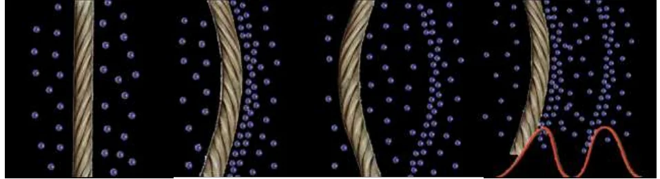
[Vibration d'une corde] Source : http://acoustique.archi.free.fr/dossier.html
Vibration d'une lame :
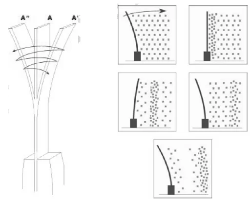
[Vibration d'une lame]
⇨ Le son ne se propage qu'en présence de matière !
L'onde acoustique est :
- Transversale dans les solides (mouvement des particules perpendiculaire au sens de propagation)
- Longitudinale dans les gaz et les liquides (mouvement des particules parallèle au sens de propagation)
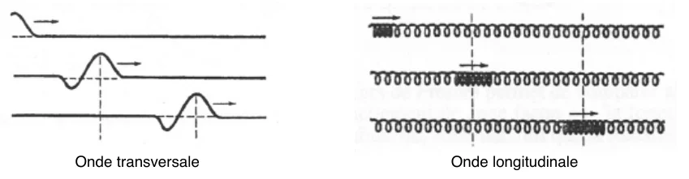
Onde transversale / Onde longitudinale
On parle de propagation en champ libre lorsqu'aucun obstacle ne gêne la propagation. Dans ces conditions, le front
d'onde (ensemble des points atteints par l'onde en même temps) est sphérique. Ce n'est vrai qu'à proximité des
sources sonores et en altitude.
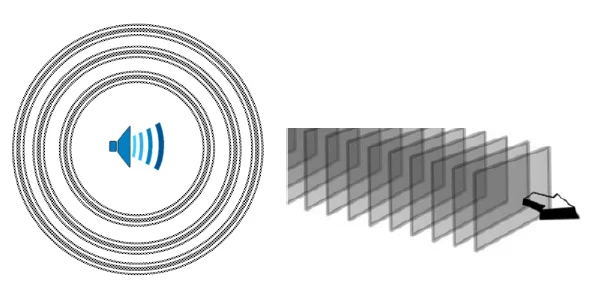
[Ondes sphériques et ondes planes]
Inversement, on parle de champs diffus lorsqu'il y a superposition d'une onde directe et d'ondes renvoyées
(réfléchies) par des parois.
Dans les calculs, les ondes sont généralement considérées planes (plans infinis parallèles entre eux et
perpendiculaires à la direction de propagation) ou sphériques et constituées de la somme d'ondes pures.
Quelques définitions
[Célérité du son selon le matériau]
| Matériaux |
Célérité du son (en m/s) |
| Air |
343 |
| Eau |
1 480 |
| Glace |
3 200 |
| Verre |
5 300 |
| Acier |
5 200 |
| Plomb |
1 200 |
| Titane |
4 950 |
| PVC (Mou) |
80 |
| PVC (Dur) |
1 700 |
| Béton |
3 100 |
| Hêtre |
3 300 |
| Granit |
6 200 |
| Péridotite |
7 700 |
| Sable sec |
10 à 300 |
La célérité est la vitesse du son, c'est-à-dire la vitesse de déplacement du front d'onde. Elle dépend de la
densité et de l'élasticité (module de Young des solides) ou de la compressibilité adiabatique (liquides et gaz).
Le son se déplace plus vite dans les solides que dans les liquides, et encore moins vite dans les gaz.
Dans l'air, la vitesse du son (voisine de 340 m/s) dépend du taux d'humidité, de la pression atmosphérique, de la
température, … Penser au cas particulier du brouillard en présence duquel tous les sons sont amortis !
La fréquence `f` est le nombre d'oscillations par seconde, en Hz (Hertz). La période `T` est l'inverse de la
fréquence. La longueur d'onde `lambda` est la distance parcourue par l'onde pendant une période.
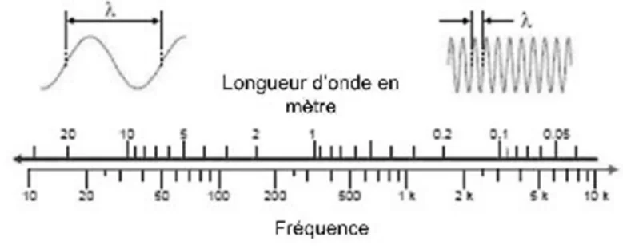
[Longueur d'onde en mètre et fréquence]
Remarques :
- En toute rigueur, il faut noter que la célérité augmente généralement avec la fréquence, mais l'évolution est
lente et généralement négligée.
- La majorité des matériaux « réels » sont amortissants (ou absorbants). L'amortissement (ou atténuation) ne
modifie pas la fréquence, mais diminue l'amplitude (la puissance). Il est approximativement proportionnel à la
fréquence et provoque une décroissance exponentielle de la puissance avec la distance. Les fréquences élevées
(sons aigus) sont donc très amortis et, plus la distance parcourue est élevée, plus le son résultant parait grave.
Dans l'air, l'amortissement diminue si l'humidité augmente. Pour exemple, à 4000Hz dans un air à 20°C et par une
humidité HR 30%, l'atténuation est de 50dB par km. Dans les solides et les
gaz, plus le matériau est « visqueux » ou « caoutchouteux », plus l'effet est important.
Un son pur est composé d'une fréquence unique, sinusoïdale.
Un son composé est périodique mais non sinusoïdal, et peut se décomposer (spectre) en une superposition de sons
purs.
Un son harmonique est un son composé dont les composantes (harmoniques) ont des fréquences proportionnelles à une
fréquence fondamentale.
Le bruit est un son composé de fréquences sans rapport entre elles et distribuées de façon continue dans une bande
de fréquences.
- Le bruit de fond est un bruit de spectre constant où toutes les fréquences d'une certaine « bande » sont
présentes.
- Un « bruit blanc » est un bruit de fond où toutes les fréquences ont même amplitude. Il est utilisé pour
« caractériser » certains environnements sonores (acoustique des salles).
- Un « bruit rose » est un bruit où l'amplitude est identique sur chaque octave. Il est utilisé en particulier
pour régler du matériel de sonorisation. Il est plus riche en fréquences basses qu'en sons aigus. Assez « proche »
du bruit d'une foule applaudissant en criant, par exemple dans un stade.
- Etc… Il est « courant » d'attribuer une « couleur » aux bruits ayant des décompositions spectrales
particulières. Bruit brun, rouge, bleu, …
L'amplitude d'un son se mesure généralement en dB (décibels), unité de mesure logarithmique.
Il s'ensuit, par exemple :
- une différence de 60 dB, signifie que le rapport d'intensité (ou de puissance) entre deux volumes sonores est de
1000
- une différence de 40 dB est dans le rapport de 100
- une différence de 20 dB est dans le rapport de 10
- une différence de 6dB est dans le rapport de 4
- une différence de 3dB est dans le rapport 2
Dans le cas d'une onde sphérique, en doublant la distance entre la source sonore et le point d'écoute, on augmente
par 4 la surface de la sphère de front d'onde représentative de l'énergie totale → la perte est de 6dB.
Dans le cas d'une onde plane en conditions de propagation idéales (pas d'amortissement), l'énergie est conservée →
perte théorique nulle.
En pratique, la perte est fortement liée à l'environnement et aux conditions de propagation : de 1 à 10 dB (voire
plus) à chaque fois que la distance est doublée.
Il existe une échelle de mesure pondérée par la sensibilité de l'oreille humaine à chaque fréquence. Ce sont les
dBA.
Attention : des niveaux sonores ne s'additionnent pas en dB !
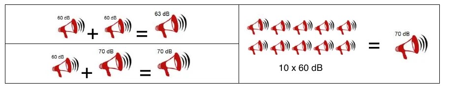
[Addition de niveaux sonores]
Si `L_1` et `L_2` sont les niveaux sonores respectifs, en dB, de deux sources indépendantes, le niveau sonore
résultant `L_I` est : `L_I = 10.log(10^(L_1/10) + 10^(L_2/10))`
Les courbes suivantes indiquent le niveau sonore résultant suivant les niveaux des sources. On constate que :
- Dans la plupart des cas, si le niveau de l'une des sources est supérieur de 10 dB à l'autre niveau sonore, le
niveau le plus faible est négligeable !
- Lorsque les deux sources produisent le même niveau d'intensité en un point donné, le niveau résultant est
augmenté de 3dB par rapport au niveau d'une seule source.
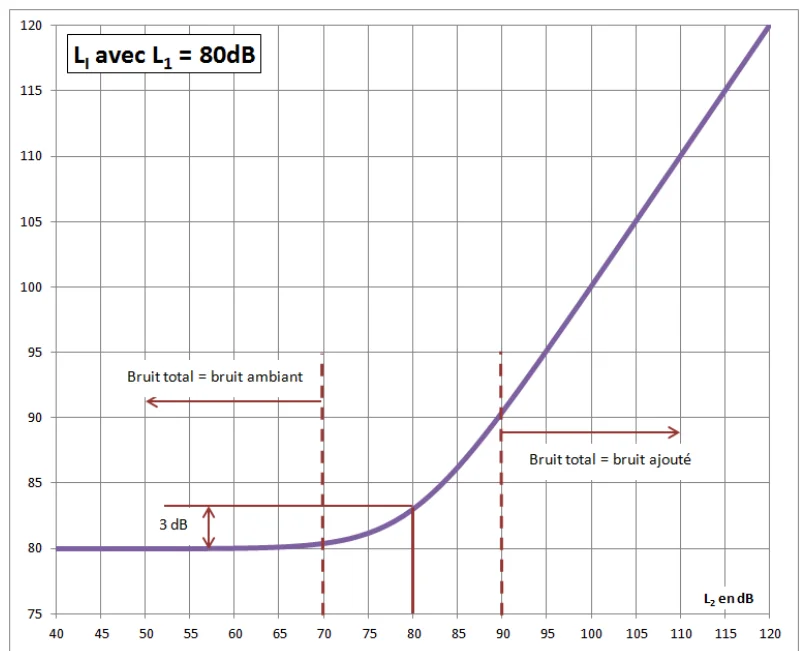
LI avec L1 = 80dB
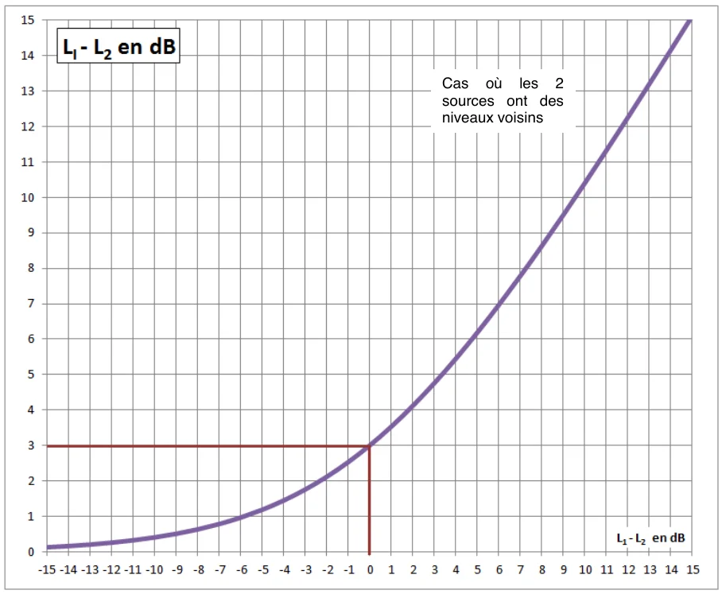
LI - L2 en dB. Cas où les 2 sources ont des niveaux voisins
Transmission et réflexion d'une onde sonore
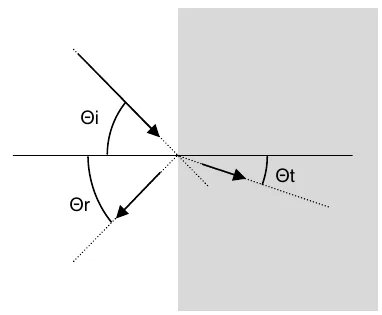
[Réflexion et transmission]
Tout comme la lumière, le son est réfléchi ou transmis (réfracté) par les parois, avec des caractéristiques
géométriques de transmission assez voisines de celles connues en optique. On note que :
- L'énergie incidente est égale à la
somme des énergies transmises et réfléchies,
- Les valeurs des angles à la normale au plan de l'onde incidente et de l'onde réfléchie sont identiques.
- La proportion entre l'énergie transmise et l'énergie réfléchie dépend de la fréquence et des caractéristiques
relatives des milieux / matériaux. Plus la différence est brutale, moins il y a d'énergie transmise.
Si la réflexion est quasi-totale et que l'onde « revient » à son point de départ, c'est le phénomène de l'écho qui
provoque par exemple une augmentation sonore de 3dB à 2m d'un mur plein.
Cas particulier : si l'angle incident est très élevé, il n'y a pas d'onde réfléchie, toute l'énergie est transmise
en une onde de surface (se propageant parallèlement à l'interface et n'allant pas en « profondeur »).
Cas des parois minces
Quelles que soient leurs caractéristiques, les parois minces ont peu d'influence sur la propagation des ondes
sonores tant que leur épaisseur reste trop faible devant la longueur d'onde. Or, pour mémoire, la longueur d'onde
d'un son de 20Hz est de 17m, alors que celle d'un son de 4000Hz est de 8,5cm et celles d'un son de 16kHz de 2cm.
Par suite, il est extrêmement difficile d'éviter la propagation des sons graves alors que les sons aigus sont
d'autant plus faciles à stopper que la plupart des matériaux les amortissent (les absorbent).
Cas des vitres
Un vitrage simple représente une atténuation sonore de l'ordre de 15 à 25 dB selon, par exemple, la qualité de la
vitre et de la menuiserie, alors qu'un vitrage à isolation phonique renforcée (double voire triple vitrage avec
gaz spécial) peut représenter une atténuation jusqu'à 37dB.
Dans une voiture, fermer les vitres aura un impact dépendant également de la qualité des joints. C'est en effet
moins la vitre elle-même qui crée l'atténuation que l'effet « caisson » de l'habitacle. Vitres fermées, il
constitue en effet une sorte de « poche » d'air dans laquelle l'onde a du mal à pénétrer. Cela se remarque
particulièrement par la différence entre vitre légèrement entrouverte et vitre totalement fermée. Suivant les
véhicules, l'atténuation peut également aller de 15 à plus de 30dB.
Diffraction
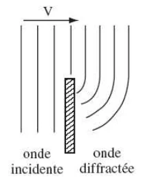
onde incidente / onde diffractée
Lorsqu'une onde sonore rencontre un objet présentant des arêtes, ces arêtes deviennent le centre d'ondes sphériques
se propageant dans de nouvelles directions.
Ondes stationnaires
En présence d'une ou plusieurs sources sonores permanentes de même fréquence, des conditions particulières de
fréquence et de propagation des ondes peuvent produire un phénomène dans lequel certains éléments sont fixes dans le
temps. Il n'y a plus, en apparence, de propagation d'une onde, mais vibration stationnaire.
L'effet Doppler
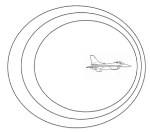
[Effet Doppler]
Explication classique : Imaginons une personne immobile sur une plage, les pieds dans l'eau. Une vague lui touche
les chevilles par exemple toutes les 3 secondes. Si la personne se déplace en courant vers le large, elle va à la
rencontre des vagues et se fait alors mouiller les chevilles plus souvent. Inversement, si elle revient vers le
sable, les vagues l'atteindront moins souvent.
Le phénomène est le même : les fronts d'ondes émis précédemment s'éloignent à vitesse identique dans toutes les
directions. Mais dans le même temps, la source sonore se déplace et les nouvelles ondes émises sont plus proches des
précédentes vers l'avant que vers l'arrière. La longueur d'onde est donc plus courte (fréquence élevée, son aigu)
vers l'avant que vers l'arrière (fréquence basse, son grave). Autrement dit, si la source sonore se rapproche, la
longueur d'onde résultante diminue et le son devient plus aigu. Si la source sonore s'éloigne, elle augmente et le
son devient plus grave.
Interférences
Particulièrement connues dans le cas des vagues.
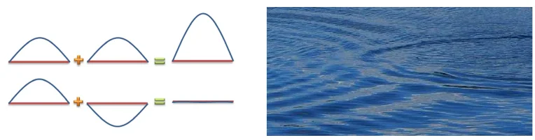
[Interférences constructives et destructives]
[Antibruit actif] Source : http://www.technofirst.com/
Les mouvements imposés aux particules par l'onde qui les atteint s'additionnent. Cela entraîne une augmentation du
mouvement global de la particule ou, inversement, une diminution de ce mouvement.
Utilisé volontairement dans le domaine de l'antibruit :
- Antibruit actif : Mesure du bruit ambiant dans une zone et émission d'un « contre-bruit ». Exemple de casques,
de cabines d'avions, … Voir par exemple les travaux de l'entreprise Technofirst Technofirst, Leader mondial de l'antibruit actif – Aubagne.
- Antibruit passif : Géométrie permettant la création d'un « écho » créant des interférences. Exemple de casques,
de canalisations, de fossés antibruit, …
Remarque : il y a « battement » (sensation d'un bruit unique mais de niveau sonore variant régulièrement) en cas
d'interférence entre 2 sons se déplaçant dans la même direction et d'amplitudes voisines mais de fréquences
légèrement différentes. C'est le cas, par exemple, lors de l'approche d'un hélicoptère.
Les zones d'ombre
Ce sont des zones où le son ne parvient que difficilement. Elles peuvent être dues à des écrans, talus, parois, …
Dans certains cas, ce sont des « fossés » qui vont constituer des écrans (difficile à concevoir mais constaté
parfois dans la nature).
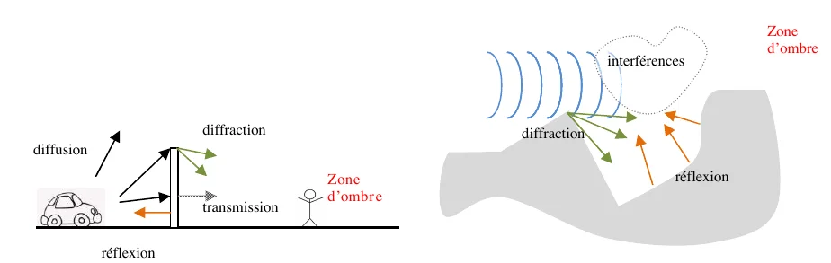
[Zones d'ombre] diffusion, diffraction, transmission, réflexion, interférences, zone d'ombre
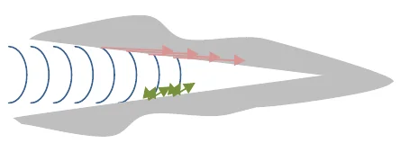
[« Trou noir » acoustique]
On constate également des effets de « trou noir » acoustique : au fur et à mesure de son « avancée » dans le
« trou », le son est diffracté et « dispersé » (ce qui peut de plus créer des interférences à effet antibruit) ou
transmis dans les parois sous forme d'ondes de surface. L'énergie parvenant à l'extrémité est quasiment nulle. Cela
peut se produire par exemple entre des immeubles ou dans des vallées de montagne.
Les guides d'onde
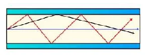
[Guide d'onde]
Phénomène « inverse » de la zone d'ombre, le principe du guide d'ondes est le même que celui des fibres optiques
pour la lumière. Le son est « ramené » au centre du guide. Ils sont classiques dans notre environnement : onde
sonore « longeant » un ruisseau, un groupe d'immeubles, des « couches » atmosphériques, … Une simple conversation
peu parfois être entendue à plusieurs kms.